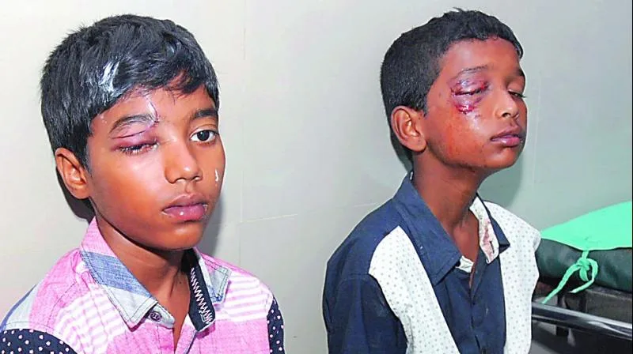
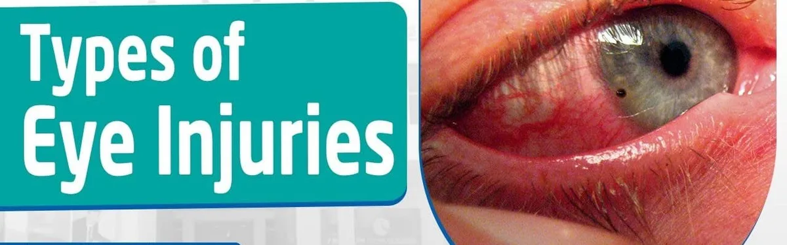
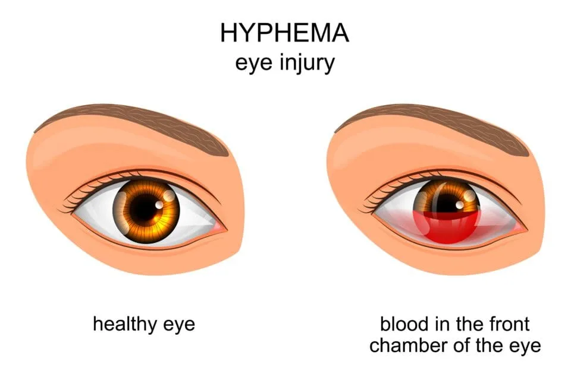
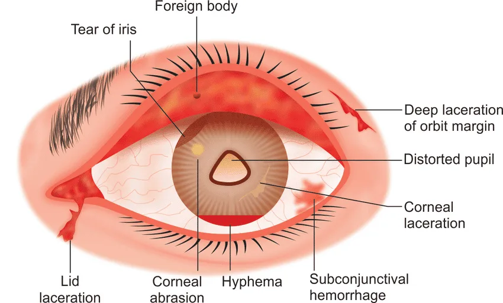

Expanded Nursing Uganda Explanation
Eye injuries in children should be understood beyond a short definition. Link the concept to patient history, focused assessment, common risks, nursing priorities, documentation and evaluation of outcomes.
Contents — 15 sections (tap to expand)
01 EYE INJURIES IN CHILDREN
An eye injury refers to any trauma or damage to the eye or its surrounding structures, including the eyelids, conjunctiva, cornea, sclera, iris, lens, retina, or optic nerve .
These injuries may result from mechanical, chemical, or thermal causes, and can range from minor irritations to vision-threatening conditions.
- Injuries to the eye, eyelid, and area around the eye
A foreign body is an object in your eye that shouldn’t be there , such as a speck of dust, a wood chip, a metal shaving, an insect or a piece of glass.
Read about Foreign Bodies in the Eye by Clicking Here
02 Classifications of Eye Injuries
Eye injuries are categorized based on the mechanism of injury , the type of trauma , and the specific anatomical location affected.
03 1. Classification by Mechanism of Injury
- Type Description Examples
- Blunt Trauma – Impact without penetration to the eye. – Often caused by rounded objects or physical force. – Sports injuries (e.g., ball, elbow). – Assault (punch). – Airbag deployment in car accidents.
- Penetrating Trauma – A sharp object pierces the eye, creating an open wound. – Glass shards. – Nails. – Metallic fragments from tools.
- Chemical Injuries – Exposure to acids or alkalis, causing chemical burns and tissue damage. – Cleaning agents. – Industrial chemicals. – Fertilizers or pesticides.
- Thermal Injuries – Damage caused by excessive heat exposure. – Explosions. – Hot oil splashes. – Flames or heated objects.
- Radiation Injuries – Injury due to exposure to ultraviolet (UV) or infrared (IR) rays. – Sunlight. – Welding arcs. – Tanning lamps.
04 2. Classification by Anatomical Location
- Location Description Examples of Injuries
- Eyelids – Protect the eye but are prone to trauma such as lacerations, contusions, and burns. – Eyelid laceration from sharp objects. – Contusion from blunt force. – Burn injuries.
- Conjunctiva – The thin membrane covering the white part of the eye and the inside of the eyelids. – Subconjunctival hemorrhage. – Conjunctival foreign body (dust, sand).
- Cornea – Transparent, dome-shaped surface responsible for focusing light. – Corneal abrasion. – Corneal laceration or ulcer. – Foreign body injuries.
- Sclera – The white, outer covering of the eyeball. – Scleral lacerations. – Penetrating injuries causing globe rupture.
- Anterior Chamber – The fluid-filled space between the cornea and iris. – Hyphema (blood in the anterior chamber).
- Lens – Focuses light onto the retina; prone to trauma-induced opacity. – Traumatic cataract formation.
- Retina and Optic Nerve – Retina is the light-sensitive layer at the back of the eye; the optic nerve transmits signals to the brain. – Retinal detachment or hemorrhage. – Optic nerve injury (e.g., optic neuropathy).
05 A. Blunt Trauma
Blunt trauma occurs when an object hits the eye with force but does not penetrate. This can lead to:
- Bruise of the Eyelids (Black Eye) : A black eye results from a bruise on the eyelids. The swelling and discoloration often worsen over the first few days before gradually improving over 2-3 weeks. It’s normal for the bruise to change colors as it heals.
- Acute Hyphema (Serious) : This condition involves bleeding in the space between the cornea and the iris, usually caused by blunt trauma. The blood often settles at the bottom of the cornea. Blood pooling in the anterior chamber, potentially causing increased intraocular pressure.
- Subconjunctival Hemorrhage : This is a bright red, flame-shaped bruise on the white part (sclera) of the eyeball, caused by a scratch. It’s a mild injury that typically resolves on its own within 2 weeks.
- Orbital Fractures : Fractures of the bones surrounding the eye, possibly affecting movement and vision.
- Retinal Detachment : The retina separates from the back of the eye due to the force.
- Cut or Scratch of Eyelid : Small cuts on the eyelid usually heal on their own. However, deep cuts or those that extend through the edge of the eyelid require sutures for proper healing.
- Corneal Abrasion : A corneal abrasion is a scratch on the clear front part (cornea) of the eye. Symptoms include severe eye pain, tearing, and constant blinking. Common causes are scratches from objects like tree branches or foreign particles stuck under the upper eyelid. Most corneal abrasions are minor and heal in 2 days, but they often require a doctor’s attention.
06 B. Penetrating Trauma
Penetrating injuries occur when a sharp object pierces the eye. Common examples include injuries from nails, knives, or metal fragments.
- Open Globe Injuries : The outer membrane of the eye is disrupted, requiring surgical repair.
- Intraocular Foreign Bodies : Debris enters the eyeball, often causing infection or inflammation.
- Punctured Eyeball (Serious) : This serious injury occurs when a sharp object tears through the cornea or sclera. Tiny objects, such as those thrown by a lawnmower, can cause such punctures.
07 C. Chemical Injuries
Chemical injuries are caused by exposure to irritants like acids or alkalis:
- Acid Burns : Cause coagulative necrosis, limiting deeper penetration.
- Alkali Burns : More severe as alkalis penetrate deeper into the tissues, causing liquefactive necrosis.
08 D. Thermal Injuries
Thermal injuries occur due to contact with hot substances or radiant heat.
- Superficial Burns : Affect only the eyelids and conjunctiva.
- Deep Burns : Damage the cornea, leading to scarring or ulceration.
09 E. Radiation Injuries
Radiation injuries result from prolonged exposure to ultraviolet (UV) or infrared (IR) rays.
- Photokeratitis : UV exposure damages the corneal epithelium, causing severe pain and tearing (commonly called “snow blindness” or “welder’s flash”).
- Chronic UV Exposure : Leads to pterygium (growth of tissue over the cornea) or cataract formation.
COMMON CONDITIONS ASSOCIATED WITH EYE INJURY AND TRAUMA INCLUDE:
Scratched Eye (Corneal Abrasion) : Common causes of corneal abrasions, or scratches to the eye’s surface, include getting poked in the eye or rubbing the eye when a foreign body is present, such as dust or sand. Corneal abrasions are very uncomfortable and cause eye redness and severe sensitivity to light. Scratches can also make eyes susceptible to infection from bacteria or fungi.
Penetrating or Foreign Objects in the Eye : Seek emergency care immediately if a foreign object, like metal or a fish hook, penetrates the eye. Avoid trying to remove the object yourself. Protect the eye with a loosely taped paper cup or eye shield until help arrives.
Caustic Foreign Substance in the Eye (Chemical Burn) : Getting unexpectedly splashed or sprayed in the eye by substances such as acids, alkalis, or other harmful chemicals. The basic makeup of the chemical involved can make a lot of difference, such as:
- Acid : Generally, acids cause considerable redness and burning but can be washed out fairly easily.
- Alkali : Substances or chemicals that are basic (alkali) are much more serious but may not seem so because they don’t cause as much immediate eye pain or redness as acids. Examples of alkali substances include oven cleaners, toilet bowl cleaners, and even chalk dust.
Eye Swelling : Eye swelling and puffy, swollen eyelids can result from being struck in the eye or stung. The best immediate treatment for this type of eye injury is an ice pack.
Subconjunctival Hemorrhages (Eye Bleeding) : A subconjunctival hemorrhage involves leakage of blood from one or more breaks in a blood vessel that lies between the white of the eye (sclera) and it’s clear covering (conjunctiva). A subconjunctival hemorrhage is painless and does not cause temporary or permanent vision loss. No treatment is required. Over the course of several weeks, the blood will clear and the eye will return to a normal appearance.
Traumatic Iritis : Traumatic iritis is inflammation of the colored part of the eye that surrounds the pupil (iris) and occurs after an eye injury. Traumatic iritis can be caused by a poke in the eye or a blow to the eye from a blunt object, such as a ball or a hand. Traumatic iritis usually requires treatment. Even with medical treatment, there is a risk of permanent decreased vision.
Hyphemas and Orbital Blowout Fractures : A hyphema is bleeding in the anterior chamber of the eye, the space between the cornea and the iris. Orbital blowout fractures are cracks or breaks in the facial bones surrounding the eye. Hyphemas and blowout fractures are serious eye injuries and medical emergencies.
10 Eye injury symptoms
- Irritation : A feeling of discomfort or itchiness in the eye.
- Severe pain : Intense discomfort in or around the eye.
- Pinkness/redness : Redness of the eye or the surrounding area.
- Decreased visual acuity : Blurred or reduced vision.
- Conjunctivitis : Inflammation or infection of the conjunctiva, often causing redness and discharge.
- Light sensitivity : Discomfort or pain when exposed to light.
- Drainage : Discharge of fluid from the eye, which can be clear, yellow, or green.
- Abnormal pH : Changes in the eye’s pH level, due to chemical exposure.
- Eye surface abrasions : Scratches or injuries on the cornea or other parts of the eye surface.
- Tearing : Excessive production of tears.
- Blurry vision : Inability to see clearly.
- Watery discharge : Clear fluid draining from the eye.
- Foreign body sensation: Feeling like something is in the eye.
Signs needing emergency care
- Pupils not equal in size: Uneven pupil sizes can indicate serious injury.
- Sharp objects hit the eye : Objects like metal chips can cause severe damage.
- Skin is split open or gaping and may need stitches : Deep cuts or lacerations around the eye.
- Any cut on the eyelid or eyeball: Lacerations in these areas can be very serious.
- Age less than 1 year old: Infants with eye injuries need immediate evaluation.
- Bruises near the eye : Bruising can indicate more serious underlying injury.
Management of Eye Injuries
A. Immediate/Emergency Management
Blunt Trauma :
- Apply a cold compress to reduce swelling.
- Elevate the head to minimize hyphema.
Penetrating Trauma :
- Do not remove the foreign body.
- Cover the eye with a rigid shield.
- Refer urgently to an ophthalmologist.
Chemical Injuries :
- Irrigate the eye immediately with copious amounts of water or saline for at least 15–30 minutes.
- Identify the chemical and call for emergency medical care.
Thermal Injuries :
- Cool the area with sterile saline or water.
- Apply sterile dressing to the affected eye.
General Measures :
- Ensure the patient remains calm and avoids rubbing the eye.
- Administer analgesics if necessary.
Medical Management
Topical Medications :
- Antibiotics (e.g., ciprofloxacin, moxifloxacin) to prevent infections.
- Cycloplegics (e.g., cyclopentolate) for pain relief in corneal or anterior chamber injuries.
- Lubricating eye drops for dryness or irritation.
Systemic Medications :
- Oral or IV antibiotics for penetrating injuries or infections.
- Corticosteroids for severe inflammation (under medical supervision).
- Pain relievers (e.g., acetaminophen).
Imaging : CT scan or X-ray for intraocular foreign bodies or orbital fractures.
Surgical Management
Foreign Body Removal :
- Surface foreign bodies removed under magnification using specialized tools.
- Intraocular foreign bodies may require surgery.
Corneal Repairs : Suturing for corneal lacerations or perforations.
Treatment for Retinal Detachment : Procedures like pneumatic retinopexy or vitrectomy.
Repair of Ruptured Globe : Requires urgent surgical intervention.
Reconstruction of Eyelids : For severe eyelid lacerations.
Nursing Management
Assessment : Monitor pain levels, vision changes, and signs of infection.
Eye Protection : Cover the injured eye with a sterile shield or dressing.
Pain Management : Administer prescribed analgesics and ensure patient comfort.
Education : Explain the treatment plan and emphasize the importance of follow-up care.
Emotional Support : Provide reassurance to the patient and family, especially in pediatric cases.
11 Care of Minor Eye Injuries
Small Cuts, Scratches, or Scrapes Treatment:
- For any bleeding, apply direct pressure on the wound using a gauze pad or clean cloth. Press for 10 minutes or until the bleeding stops.
- Wash the wound with soap and water for 5 minutes. Protect the eye with a clean cloth.
- Apply an antibiotic ointment (such as Polysporin) to the cut 3 times a day for 3 days. No prescription is needed.
- Cover large scrapes with a bandage (such as Band-Aid) and change it daily.
Swelling or Bruises with Intact Skin (including a Black Eye) Treatment:
- Apply a cold pack or ice wrapped in a wet cloth to the eye for 20 minutes to help reduce bleeding and swelling. Repeat as needed.
- A black eye usually develops over 1 to 2 days.
- A flame-shaped bruise on the white of the eyeball is also common.
- After 48 hours, use a warm wet cloth for 10 minutes, 3 times per day to help reabsorb the blood.
Pain Medicine:
- To alleviate pain, give an acetaminophen product (such as Tylenol) or an ibuprofen product (such as Advil). Use as needed.
Routine Irritations (sand, dirt, and other foreign bodies on the eye surface):
- Wash your hands thoroughly before touching the eyelids to examine or flush the eye.
- Do not touch, press, or rub the eye itself. Prevent the child from touching the eye (swaddling may help for babies).
- Remove foreign bodies only by flushing, as other methods can scratch the cornea.
- Tilt the child’s head over a basin or sink with the affected eye down, gently pull down the lower lid, and encourage the child to open the eyes wide.
- Pour a steady stream of lukewarm water (do not heat the water) from a pitcher or faucet over the eye.
- Flush for up to 15 minutes, checking the eye every 5 minutes to see if the foreign body has been flushed out.
- If irritation continues after flushing, see a doctor, as particles can scratch the cornea and cause infection.
- Administer analgesics and topical eye drops as needed.
- Foreign bodies that remain after flushing likely require professional removal.
Embedded Foreign Body (an object penetrates or enters the globe of the eye):
If an object like glass or metal is sticking out of the eye, take the following steps:
- Admit the child to the emergency room.
- Cover the affected eye with a small cup taped in place to keep all pressure off the eye.
- Keep the child (and yourself) calm and comfortable until help arrives.
- Surgical procedures will be required to address such injuries.
Chemical Exposure:
- Flush the eye immediately with lukewarm water for 15 to 30 minutes (see Routine Irritations for detailed steps).
- If both eyes are affected, flush them in the shower.
- Admit the patient to the emergency room.
Black Eyes and Blunt Injuries:
A black eye can be a minor injury but might also indicate a significant eye or head trauma.
An in-depth evaluation is necessary to rule out damage to the eye.
For a black eye:
- Apply cold compresses intermittently: 5 to 10 minutes on, 10 to 15 minutes off. Cover ice with a towel or sock to protect the delicate eyelid skin.
- Use cold compresses for the first 24 to 48 hours, then switch to warm compresses intermittently to help the body reabsorb the blood leakage and reduce discoloration.
- If the child is in pain, give acetaminophen (avoid aspirin or ibuprofen, which can increase bleeding).
- Prop the child’s head with an extra pillow at night and encourage them to sleep on the uninjured side to reduce swelling.
Advice on discharge
Instructions on Medication Use : Proper instillation of eye drops and compliance with prescribed regimen.
Activity Restrictions : Avoid strenuous activities to prevent strain on the injured eye.
Follow-Up Care : Ensure regular visits to the ophthalmologist for monitoring.
Signs to Watch For : Educate the patient about symptoms of complications like worsening pain, vision loss, or redness.
12 Nursing Uganda Clinical Lens
Use Eye injuries in children as a practical nursing topic, not only a memorized definition. Adapt assessment and care to age, weight, development, caregiver knowledge and family support.
- What to understand first: define eye injuries in children, identify the normal or expected pattern, then explain what changes when the patient is unwell.
- Why it matters in care: the nurse must recognize risk early, explain findings clearly, document accurately and know when to escalate.
- How to revise it: connect each point to assessment, nursing diagnosis or care problem, intervention, rationale and evaluation.
13 Assessment Guide
- Airway, breathing, circulation, hydration, temperature, feeding, activity and danger signs.
- Weight-based medicines, immunization status, growth, development and caregiver concerns.
- Signs that may be subtle in children, including lethargy, poor feeding, fast breathing or convulsions.
14 Nursing Priorities, Rationales and Outcomes
- Use age-appropriate communication and involve the caregiver.
- Prevent dehydration, hypothermia, medication errors and delayed referral.
- Teach home care, danger signs and follow-up clearly.
The rationale for these priorities is patient safety: nursing actions should prevent deterioration, reduce discomfort, support recovery and create clear evidence for the next caregiver.
- Expected outcome: The child is clinically improving, caregiver instructions are understood and follow-up is arranged.
15 Patient Teaching and Revision Check
- Explain eye injuries in children in simple language the patient or caregiver can repeat back.
- Teach warning signs, medicine or follow-up instructions, hygiene or lifestyle points where relevant.
- For exams, prepare a short answer using: definition, causes or risk factors, signs, assessment, management, complications and prevention.
- For ward practice, document baseline findings, actions taken, patient response and the plan for review.
Illustrations and Diagrams (4)




Related Video Lectures
Watch nursing lecture videos on YouTube for this topic. Opens in a new tab.
Watch on YouTubeExternal link: YouTube may use its own cookies and terms. Nursing Uganda is not affiliated with YouTube.